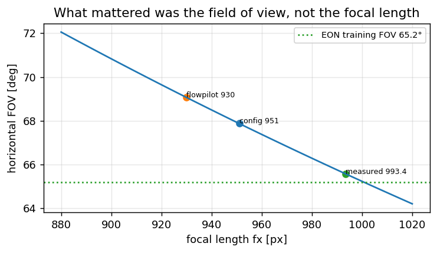
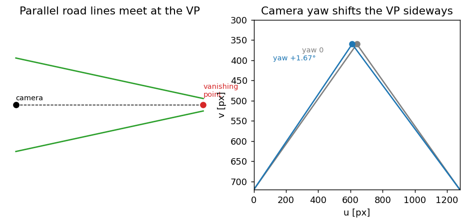

Three calibrations, not one: intrinsics, vanishing point, model warp#
“Calibrate the camera” means three different things in this stack, done at three different times by three different mechanisms. Confusing them is the most common way to spend a day fixing the wrong one.
# |
what |
what it answers |
when |
how |
|---|---|---|---|---|
1 |
intrinsics \(f_x, f_y, c_x, c_y\) |
how the lens maps directions to pixels |
once per phone, offline |
chessboard |
2 |
extrinsics roll / pitch / yaw |
how the phone is aimed relative to the car |
every drive, continuously |
vanishing point, plus model pose |
3 |
model warp |
how to turn our frame into the frame the network was trained on |
every frame |
a homography built from 1 and 2 |
Only the third one touches the network, and it consumes the other two. So an error in 1 or 2 does not look like a calibration error — it looks like the network being bad at its job.
Why this chapter has real numbers in it
Every value below was measured on this phone and this car, and several of them contradicted a reasonable expectation. Those are the interesting ones.
Step 1: intrinsics from a chessboard#
The pinhole model says a direction \((X, Y, Z)\) in camera coordinates lands at
Two focal lengths and a principal point, four numbers. A chessboard of known geometry, photographed from enough angles, over-determines them, and OpenCV solves for them along with lens distortion.
cd scripts
# From a directory of stills, or straight from a recorded drive that happened to include the board.
python3 tools/camera_calib_chessboard.py --images ~/calib_shots --pattern 9x6
python3 tools/camera_calib_chessboard.py --bag ../adas_logs/<session> --pattern 9x6
--pattern counts inner corners, so a board with 10×7 squares is 9x6. The script also enforces view
diversity: shots that are too similar add nothing, because what over-determines the focal length is seeing
the board from genuinely different angles.
The result on this phone, at 1280×720:
quantity |
measured |
what was assumed before |
|---|---|---|
\(f_x\) |
993.4 |
951 (config), 930 (flowpilot) |
\(f_y\) |
995.2 |
951 |
\(c_x, c_y\) |
621.9, 376.9 |
640, 360 (frame centre) |
reprojection RMS |
0.38 px |
— |
The number that mattered was not the focal length#
{kind=link}

Fig. 38 Focal length matters only through the field of view it implies; the measured 993.4 px lands on the EON training FOV, the old 951 did not.#
It is tempting to read that table as “the focal length was 4.5 % off”. The useful reading is different. Convert each candidate to a horizontal field of view:
import math
WIDTH = 1280.0
def fov_deg(focal_px, width_px=WIDTH):
"""Horizontal field of view implied by a focal length in pixels."""
return 2.0 * math.degrees(math.atan(0.5 * width_px / focal_px))
print(f"{'source':>28} {'focal':>7} {'FOV':>8}")
for name, f in (("config before", 951.0), ("flowpilot assumption", 930.0),
("chessboard, measured", 993.4), ("comma EON, what it was trained on", None)):
if f is None:
print(f"{name:>28} {'—':>7} {65.2:>7.1f}°")
else:
print(f"{name:>28} {f:>7.1f} {fov_deg(f):>7.1f}°")
The measured 993.4 puts our field of view at 65.6°, against the 65.2° of the EON camera that Supercombo was trained on. The old 951 gave 67.9° and flowpilot’s assumption 69.1°.
That is the whole argument. A network trained on one field of view and fed another sees a scene that is subtly stretched, and it has no way to tell you so — it just becomes worse at estimating distance. The target was never “the true focal length of this lens” in the abstract; it was “the number that makes our frame match the training distribution”.
Measured consequence: camera odometry scale against wheel speed went 0.844 → 0.888, which is the +4.5 % the focal change predicts, to the digit.
Why the principal point is deliberately left wrong#
The chessboard says the principal point is 18 px left and 17 px below centre. We ship 640, 360 anyway. That is not laziness, and the reason is worth understanding because it generalises.
FX, FY = 993.4, 995.2
def offset_as_angle(du_px, dv_px, fx=FX, fy=FY):
"""A principal-point offset is indistinguishable from a small camera rotation."""
return math.degrees(math.atan(du_px / fx)), math.degrees(math.atan(dv_px / fy))
dyaw, dpitch = offset_as_angle(640.0 - 621.9, 376.9 - 360.0)
print(f"principal point offset (18.1, 16.9) px == yaw {dyaw:+.2f}°, pitch {dpitch:+.2f}°")
print("\nThe online extrinsics estimator has exactly those two degrees of freedom, so it absorbs the")
print("offset within a minute of driving. Correcting it in the intrinsics as well double-counts it.")
Verified rather than assumed: fixing \(c_x, c_y\) without resetting the extrinsics estimate doubled lane \(\sigma\) from 0.25 to 0.55, measured on 90 frames of a recorded drive (the one-off A/B script that produced this has since been removed; the number is what survives). The two corrections were fighting each other. Fixing the principal point only makes sense together with a calibration reset, and even then it does not improve \(\sigma\) — it just moves the same information from one place to another.
The rule
Before correcting a parameter, ask which other parameter already absorbs it. Two estimators for one physical quantity is worse than one wrong estimator, because now the error moves.
{kind=link}

Fig. 39 Left: parallel road lines project to a vanishing point. Right: a camera yaw shifts that point sideways — which is how the extrinsics are read from the road.#
Step 2: extrinsics online, from the vanishing point#
Intrinsics are a property of the lens and never change. The mounting angles change every time the phone is picked up — measured on two consecutive night drives, the learned yaw went from +1.67° to +0.10° and the pitch from −1.11° to −0.67°. No prior survives that, so the angles have to be estimated while driving.
The geometry#
Parallel lines in the world meet at a single point in the image, and that point depends only on their direction — not on where the camera is. Lane lines are parallel and point where the road points, so their intersection tells you where the camera is aimed relative to the road.
Given a vanishing point \((u_i, v_i)\), the direction it corresponds to is \(\hat r = \operatorname{norm}\big((u_i - c_x)/f_x,\ (v_i - c_y)/f_y,\ 1\big)\), and
CX, CY = 640.0, 360.0
def pitch_yaw_from_vp(u, v, fx=FX, fy=FY, cx=CX, cy=CY):
"""Mirror of `getPitchYawFromVp` in utils/vanishing_point_calib.cpp."""
x, y, z = (u - cx) / fx, (v - cy) / fy, 1.0
n = math.sqrt(x * x + y * y + z * z)
x, y, z = x / n, y / n, z / n
return math.degrees(math.asin(max(-1.0, min(1.0, y)))), math.degrees(-math.atan2(x, z))
print(f"{'vanishing point':>22} {'pitch':>8} {'yaw':>8}")
for u, v in ((640.0, 360.0), (640.0, 340.0), (669.0, 360.0), (669.0, 341.0)):
p, y = pitch_yaw_from_vp(u, v)
print(f"{f'({u:.0f}, {v:.0f})':>22} {p:>7.2f}° {y:>7.2f}°")
Mind the signs, because they are not the intuitive ones. With \(\mathrm{yaw} = -\arctan(r_x/r_z)\), a vanishing point to the right of centre gives a negative yaw — so the +1.67° the estimator learned on the 08-04 run corresponds to a vanishing point 29 px to the left. Run the block and the third row shows −1.67° for a point on the right; the learned value is its mirror.
And note the sensitivity: 17 pixels is a degree. That is why the estimate averages over 50 samples and why a single frame is worthless.
Finding the point, and refusing to#
def fit_line_v_of_u(uv, mean_residual_thresh=25.0):
"""v = m·u + c by least squares, rejected if the fit is not a line. Returns (m, c) or None."""
n = len(uv)
if n < 3:
return None
su = sum(p[0] for p in uv); sv = sum(p[1] for p in uv)
suu = sum(p[0] * p[0] for p in uv); suv = sum(p[0] * p[1] for p in uv)
den = n * suu - su * su
if abs(den) < 1e-9:
return None
m = (n * suv - su * sv) / den
c = (sv - m * su) / n
resid = sum(abs(m * u + c - v) for u, v in uv) / n
return (m, c) if resid <= mean_residual_thresh else None
def intersect(l1, l2):
(m1, c1), (m2, c2) = l1, l2
if abs(m1 - m2) < 1e-9:
return None # parallel in the image: no usable vanishing point
u = (c2 - c1) / (m1 - m2)
return u, m1 * u + c1
# Two lane lines converging up-and-right, as a right-aimed camera on a straight road would see them.
left = [(300.0, 700.0), (420.0, 560.0), (540.0, 420.0)]
right = [(1000.0, 700.0), (900.0, 560.0), (800.0, 420.0)]
li, ri = fit_line_v_of_u(left), fit_line_v_of_u(right)
vp = intersect(li, ri)
print(f"vanishing point {vp[0]:.0f}, {vp[1]:.0f} -> pitch {pitch_yaw_from_vp(*vp)[0]:+.2f}°, "
f"yaw {pitch_yaw_from_vp(*vp)[1]:+.2f}°")
# A curved "line" must be rejected: on a bend, lane lines are not parallel and their image intersection is
# not a vanishing point. The gate is on the mean residual, so the bend has to be worth rejecting — a gentle
# one passes, and that is a deliberate trade rather than an oversight.
for name, pts in (("gentle bend", [(300.0, 700.0), (420.0, 520.0), (540.0, 420.0)]),
("real bend", [(300.0, 700.0), (420.0, 470.0), (540.0, 420.0)])):
fit = fit_line_v_of_u(pts)
resid = None
if True:
# recompute the residual to show how close to the 25 px threshold each case sits
n = len(pts)
su = sum(q[0] for q in pts); sv = sum(q[1] for q in pts)
suu = sum(q[0] ** 2 for q in pts); suv = sum(q[0] * q[1] for q in pts)
m = (n * suv - su * sv) / (n * suu - su * su)
c = (sv - m * su) / n
resid = sum(abs(m * u - v + c) for u, v in pts) / n
print(f"{name:>12}: mean residual {resid:5.1f} px -> {'accepted' if fit else 'rejected'}")
Three refusals are built in, and each one exists because its absence produces a confidently wrong number:
the fit must be a line — mean residual ≤ 25 px. On a bend the lane lines are not parallel, so their image intersection is not a vanishing point at all;
the result must be plausible — \(|\text{pitch}| \le 25°\), \(|\text{yaw}| \le 15°\). A phone is not mounted sideways, and a sample outside that came from a bad fit;
it must be a consensus — samples accumulate to a history of 50, the mean is committed, and the history is cleared. One frame is a degree of noise; fifty frames is an estimate.
What it costs to start wrong#
Convergence takes 30–60 s of driving, and during that time the warp uses the config prior. That sounds dangerous and measures cheap:
def converge(prior_deg, truth_deg, tau_s, t_s):
return truth_deg + (prior_deg - truth_deg) * math.exp(-t_s / tau_s)
print(f"{'t':>5} {'yaw estimate':>14} {'lateral error at 20 m':>23}")
for t in (0, 5, 15, 30, 60):
est = converge(1.67, 0.10, 15.0, t) # prior from the previous mount, truth this drive
err = 20.0 * math.tan(math.radians(est - 0.10))
print(f"{t:>4}s {est:>13.2f}° {err:>21.2f} m")
On the measured run, the lateral offset on straights during the first 30 s was 0.02 m — so no gate on calibration status is needed. What is needed is the discipline not to judge lane-keep in the first minute.
And a conclusion that surprised us: persisting the learned angles is nearly worthless. A prior from the previous mount is no better than the default, because the mount is not repeatable. What matters is convergence speed, not memory.
Step 3: the model warp, where both calibrations are consumed#
Supercombo does not take our frame. It takes a 512×256 image in a canonical geometry — openpilot’s “medmodel” frame, focal 910 px with the principal point 47.6 px below the top of the crop. Our job every frame is to produce that image from ours, taking the mounting angles out.
Read it right to left, which is how it acts on a model-frame pixel: undo the canonical projection, rotate
out the mounting angles, project through our real lens. \(V\) is view_from_device, the fixed permutation
from device axes (x forward, y right, z down) to camera axes.
The matrix is built once per calibration update; applying it to 1.5 million pixels happens every frame, and that part runs as an OpenCL kernel on the GPU (4.6 ms, against 12.1 on the CPU). The arithmetic is the same either way — and it is verified to be the same, by computing the first frame after startup both ways and comparing them bit-for-bit. On a Mali GPU that comparison caught a chroma plane coming back wrong and moved the warp back to the CPU on the second frame, which is the entire reason the check exists.
import numpy as np
MED_FL, MED_CY = 910.0, 47.6
MODEL_W, MODEL_H = 512, 256
VIEW_FROM_DEVICE = np.array([[0.0, 1.0, 0.0],
[0.0, 0.0, 1.0],
[1.0, 0.0, 0.0]])
def rot(roll, pitch, yaw):
cr, sr, cp, sp, cy_, sy = (math.cos(roll), math.sin(roll), math.cos(pitch),
math.sin(pitch), math.cos(yaw), math.sin(yaw))
Rz = np.array([[cy_, -sy, 0.0], [sy, cy_, 0.0], [0.0, 0.0, 1.0]])
Ry = np.array([[cp, 0.0, sp], [0.0, 1.0, 0.0], [-sp, 0.0, cp]])
Rx = np.array([[1.0, 0.0, 0.0], [0.0, cr, -sr], [0.0, sr, cr]])
return Rz @ Ry @ Rx
def model_to_camera(roll_deg, pitch_deg, yaw_deg, fx=FX, fy=FY, cx=CX, cy=CY):
K = np.array([[fx, 0.0, cx], [0.0, fy, cy], [0.0, 0.0, 1.0]])
K_med = np.array([[MED_FL, 0.0, MODEL_W / 2.0], [0.0, MED_FL, MED_CY], [0.0, 0.0, 1.0]])
R = rot(math.radians(roll_deg), math.radians(pitch_deg), math.radians(yaw_deg))
return K @ VIEW_FROM_DEVICE @ R @ np.linalg.inv(K_med @ VIEW_FROM_DEVICE)
def where_does_it_sample(warp, u_model, v_model):
p = warp @ np.array([u_model, v_model, 1.0])
return p[0] / p[2], p[1] / p[2]
centre = (MODEL_W / 2.0, MODEL_H / 2.0)
for label, (roll, pitch, yaw) in (("08-04 mount", (0.0, -1.11, 1.67)),
("08-06 mount", (0.0, -0.67, 0.10)),
("stale prior on the 08-06 drive", (0.0, -1.11, 1.67))):
u, v = where_does_it_sample(model_to_camera(roll, pitch, yaw), *centre)
print(f"{label:>31}: model centre samples our pixel ({u:7.1f}, {v:7.1f})")
Compare the first two rows: the same model pixel is taken from 27 px apart in our frame depending only on how the phone happened to sit. The third row is the trap — it is the 08-04 angles used on the 08-06 drive, which is what a persisted prior would give you, and it samples 27 px away from where it should.
A 1.57° change in learned yaw moves where the model frame samples our image by tens of pixels, so the network sees a different picture and outputs a different plan.
That is not an abstract worry. It is why two runs on the same road, with the phone remounted between them, cannot have their plan offsets compared: the perception configuration differs. This project drew a conclusion from exactly such a comparison once and had to walk it back.
Step 4: what none of this can fix#
Three quantities stay out of reach, and knowing which is which saves a lot of effort:
Roll is weakly observable. A vanishing point gives two angles, and roll is not one of them — a roll
rotation moves the point along a line rather than to a distinguishable place. Estimates hover near zero;
treat a large roll swing as a bug, not a measurement. This is the same hole that blocks
paramsd: road bank needs an orientation estimate from the accelerometer,
which the planar filter does not have.
Camera height and forward position are not geometric here. From bags, the height estimate ranged 0.80 to 0.98 against a tape-measured 1.1 m. Use the tape.
The metric scale is the network’s, not the lens’s. After the focal fix, camera odometry sits at 0.888 of wheel speed. Reaching 1.0 would need \(f_x \approx 1119\), while the chessboard says 993 with 0.38 px of residual — so the remaining 11 % is a domain gap between our camera and the one the model was trained on, not a calibration error. It is the upper bound on everything measured through the model, and no tuning downstream escapes it.
Config#
"calibration": {
"camera": {
"position_m": { "x_forward": 1.5, "y_left": 0.0, "z_up": 1.1 },
"rpy_deg": { "roll": 0.0, "pitch": -1.8, "yaw": 0.5 },
"intrinsics_from_device": true,
"intrinsics_prior": { "device": "HD1901",
"fx": 993.4, "fy": 995.2, "cx": 640.0, "cy": 360.0,
"width": 1280, "height": 720 }
}
}
rpy_deg is a starting guess that the online estimator replaces within a minute; the intrinsics are not a
guess and should not be edited without a chessboard. The principal point stays at frame centre on purpose —
step 1.
Whose intrinsics are these, anyway?#
device: "HD1901" is the field that makes the block honest. 993.4 px was measured with a chessboard on
that phone, and on any other phone it is simply someone else’s number — on a Xiaomi 14 it produced 993.4
where the camera itself reports 951, which bends the lane geometry with nothing in the log to say so.
So the order of preference is:
your own chessboard measurement, when
intrinsics_prior.devicematches this phone;what the camera reports —
LENS_INTRINSIC_CALIBRATIONif the vendor fills it in, otherwise the focal length and sensor size from the camera characteristics;someone else’s prior — which is to say, nothing at all.
The log states which one was taken. If it says the prior was dropped as “unknown device”, that is the mechanism working, not a failure.
Two unit traps in this block, both of which have bitten
The numbers here are full-frame units, 1280×720. A bag frame is 640×360, and publishing bag-frame
numbers into a topic that is read as full-frame cost a drive — see the calibration
overview. And \(f_y\) must be scaled by the same factor as \(f_x\): the 16:9 stream is a crop of
a 4:3 sensor that preserves horizontal field of view, so scaling \(f_y\) by the active array height produced
fx=427.5 next to fy=320.6 on square pixels.
Exercises#
Photograph a chessboard from ten angles and run the script. Compare your reprojection RMS to 0.38 px; if it is much worse, which of your shots is the problem, and how would you tell?
Compute the field of view your measured focal implies. How far is it from 65.2°, and how much of the difference is the lens versus the crop your phone applies to the sensor?
Take the vanishing-point code and feed it lane lines from a bend. Show that the line-fit gate rejects them, then remove the gate and plot the pitch it would have reported through the bend.
Perturb the yaw fed to
model_to_cameraby 1° and compute how far the sampled pixel moves at the top of the model frame versus the bottom. Explain the difference.Measure, on a bag, how long the online estimate takes to come within 0.2° of its final value. Then argue whether the app should refuse to steer until then — and defend your answer with the 0.02 m of measured first-30-seconds offset.
Next: Latency and thermal